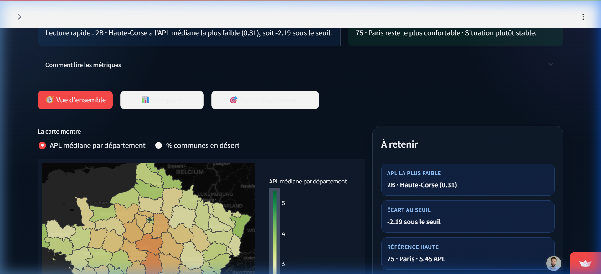

France Healthcare Access — Observatoire des SoinsFrance Healthcare Access — Medical Observatory
L'Enjeu OpérationnelOperational Context
L'accès à un médecin généraliste est un problème critique en France. L'objectif est de fournir un outil d'aide à la décision factuel pour cartographier cette fracture. Primary care access is a critical issue in France. The goal is to provide a factual decision-making tool to map this territorial divide.
- Localisation des 34 954 communes via l'API Géo. Geospatial indexing of all 34,954 communes via Geo API.
- Croisement avec la démographie INSEE 2021 (Recensement). Cross-referencing with 2021 INSEE demographic census data.
- Modélisation de la pression médicale via l'indice APL (DREES). Medical pressure modeling via the DREES APL index.
- Agrégation multidimensionnelle (Villes vs Départements). Multidimensional aggregation (Cities vs Departments).
L'Approche AnalytiqueThe Analytical Approach
Implémentation d'un pipeline ETL s'appuyant sur l'API data.gouv.fr (DREES) pour l'APL (Accessibilité Potentielle Localisée), l'INSEE pour la démographie et l'API Geo. Une transformation en-mémoire très véloce via DuckDB calcule les indicateurs de disparité à l'échelle départementale et produit un Dashboard Streamlit performant. Implementation of an ETL pipeline leveraging the data.gouv.fr API (DREES) for APL (Localized Potential Accessibility), INSEE for demographics, and the Geo API. A blazing fast in-memory transformation via DuckDB calculates disparity metrics at the department level, feeding a performant Streamlit Dashboard.
Architecture TechniqueTechnical Architecture
Architecture cloud-native s'exécutant sur GitHub Actions pour actualiser le dashboard via DuckDB et Parquet. Cloud-native architecture running on GitHub Actions to refresh the dashboard using DuckDB and Parquet.
- Pipeline Python OOP modulaire et typé. Modular and typed OOP Python pipeline.
- Moteur SQL DuckDB pour des transformations performantes. DuckDB SQL Engine for high-performance transformations.
- Validation de données automatisée avec Pydantic. Automated data validation using Pydantic.
- Stockage Parquet ultra-compressé pour le déploiement. Ultra-compressed Parquet storage for deployment.
- Orchestration CI/CD via GitHub Actions (Weekly). CI/CD orchestration via GitHub Actions (Weekly).
🚀 Explorateur LiveLive Explorer
Dashboard interactif bilingue hébergé sur Streamlit. Bilingual interactive dashboard hosted on Streamlit.

🏗️ Data PipelineData Pipeline
🔍 Analyses & Résultats 🔍 Key Findings & Results
Optimisation MapMap Optimization
Le rendu de 35k polygones figeait le navigateur. Utilisation de simplify() pour réduire le payload JSON de 150Mo à 40Mo sans perte visuelle.
Rendering 35k polygons crashed browsers. Used simplify() to cut JSON payload from 150MB to 40MB with zero visual degradation.
Fracture TerritorialeTerritorial Gap
Identification de zones "blanches" périurbaines où l'APL est < 2.5, révélant un accès 4x inférieur aux centres-villes denses. Identified suburban "white zones" with APL < 2.5, showing access 4x lower than dense city centers.
Maintenance ZeroZero Maintenance
Pipeline 100% serverless via GitHub Actions. Le dashboard se met à jour seul chaque mois au rythme des publications Open Data. 100% serverless pipeline via GitHub Actions. Dashboard auto-updates monthly following Open Data publication cycles.
💡 Enseignements & FuturLessons & Roadmap
La combinaison DuckDB + Parquet s'avère 10x plus rapide que pandas seul pour les calculs de jointures massives.
DuckDB + Parquet proved 10x faster than standalone pandas for massive join operations.
Intégration prévue des données de temps de trajet (Isochrones) pour affiner l'accessibilité réelle par la route.
Upcoming: Travel time integration (Isochrones) to calculate real road-based accessibility metrics.
🚀 Impact & Évolutivité 🚀 Impact & Scalability
Cet observatoire fournit une vision actionnable pour les politiques publiques de santé, permettant d'identifier précisément les zones nécessitant des mesures d'incitation à l'installation. L'automatisation via GitHub Actions assure une mise à jour mensuelle sans intervention humaine. This observatory provides an actionable vision for public health policies, allowing for the precise identification of areas requiring installation incentives. Automation via GitHub Actions ensures a monthly update without human intervention.